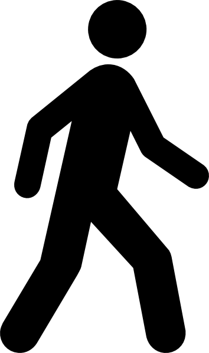
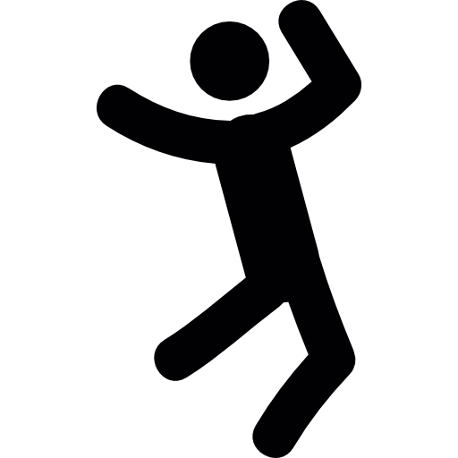

Fit For Life!
By: Carson Wright
What does it mean to be physicaly fit?
Physical fitness means you're able to perform as you need to in everyday life. If you're out of breath, or tire easily doing everyday things you aren't physicaly fit.

The 3 components of physical fitness.
Now that you know what physical fitness is you need to understand the 3 things that make it up.
Strength
Noun
The quality or state of being physically strong.
Merrian Webster
An example of strength would be lifting and moving heavy tree branches in your yard.
Endurance
Noun
The ability to do something difficult for a long time.
Merrian Webster
An example of endurance would be lifting and moving heavy tree branches in your yard for three hours.
Flexibility
Noun
Capable of bending or being bent.
Merrian Webster
An example of flexibility would be bending down to pick up the tree branches.
Now what?
Now that you know what physical fitness is I'm sure you're itching to get out and sart exercising. Here's what you should do to attain and maintain physical fitness.
- Find an aerobic (with air) activity you enjoy.
- Do that or another acivity for 30 minutes a day at least 3-4 times a week.
- Have Fun! And enjoy the results of becoming physically fit.